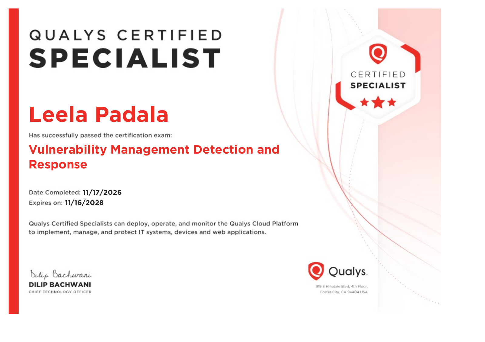

Qualys Certified Specialist
Vulnerability Management Detection and Response
Certificate awarded to Leela Padala.
View certificate (PDF)
Vulnerability Management Detection and Response
Certificate awarded to Leela Padala.
View certificate (PDF)